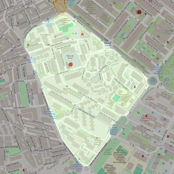

Nuestra Señora de la Saleta
- Arciprestazgo
- Alcorcón
- Población
- Alcorcón
- Dirección postal
- Pza. Brasil, s/n
- Código postal
- 28921
- Extensión
- 0,29 km² (29 ha)
- Teléfono
- 916 199 060
- Correo electrónico
- nssaleta-alcorcon@diocesisgetafe.es
- Información demográfica
- De la parroquia · De la población (Alcorcón) · Del arciprestazgo (Alcorcón)


Descargar mapaLímites según decreto
"Partiendo de la glorieta donde confluyen las avenidas Leganés y Cantarranas, arrancan por el eje de la avenida Leganés (en dirección sureste); siguen por el eje de la avenida Alcalde José Aranda (en dirección suroeste), por el eje de la calle Polvoranca (en dirección noroeste) y por el eje de la avenida Cantarranas (en dirección noreste) hasta la confluencia con la avenida Leganés, punto de partida". (Decreto de actualización de límites, 21-6-2005. B. O. de julio-agosto de 2005, pág. 801)